Los ministros de Asuntos Exteriores de Pakistán y la India rompieron ayer el hielo al encontrarse en Katmandú , capital de Nepal , donde se celebra una reunión de los siete países de Asia del sur.
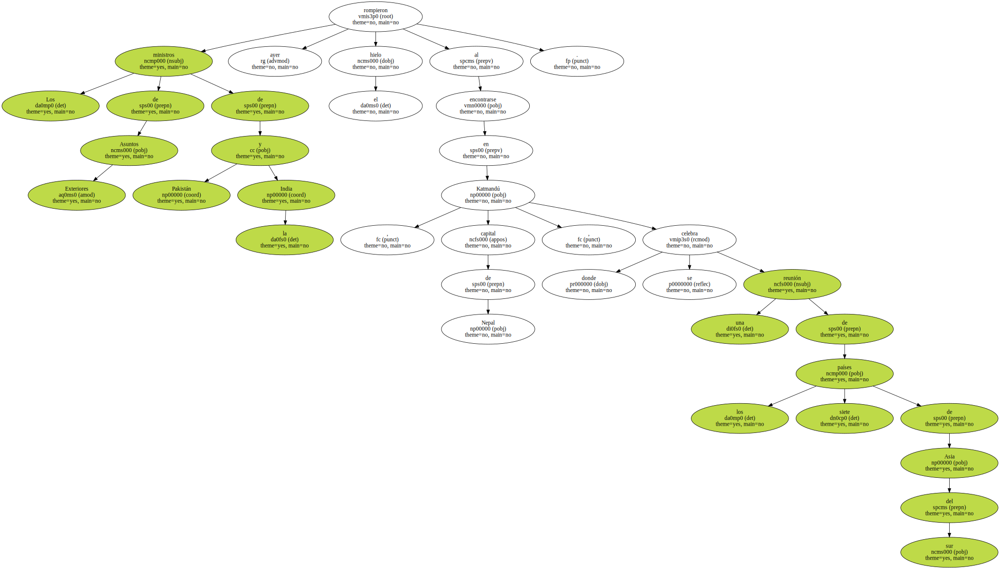A pesar de ello , la tensión entre los dos países sigue siendo excepcional.
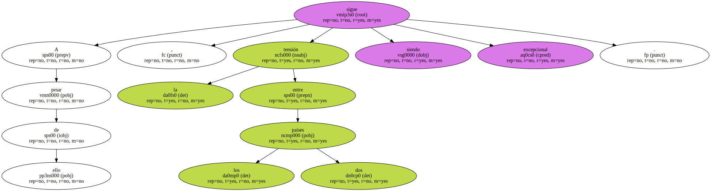El jefe de la diplomacia paquistaní , Abdul Sattar , y el de la india , Jasuant Singh , se sonrieron , se saludaron calurosamente y hablaron durante un breve espacio de tiempo , según explicó su homólogo de Sri Lanka , Tyrone Fernando.
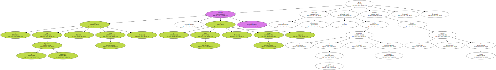ATAQUE TERRORISTA EN CACHEMIRA.
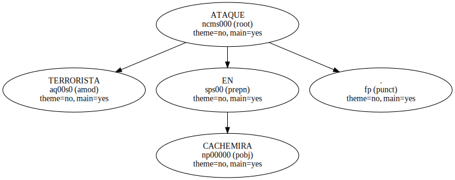Al mismo tiempo que se registraban esos gestos de cordialidad , un atentado en la parte de Cachemira administrada por la India causó un muerto y una veintena de heridos.

La acción , atribuida a separatistas musulmanes , consistió en un ataque con granadas contra el Parlamento provincial de Srinagar , que se encuentra cerrado durante los meses de invierno.
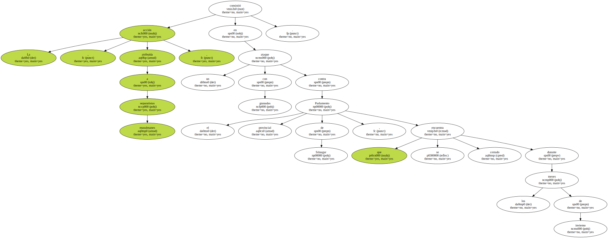Los terroristas lanzaron varias granadas contra la sede parlamentaria.
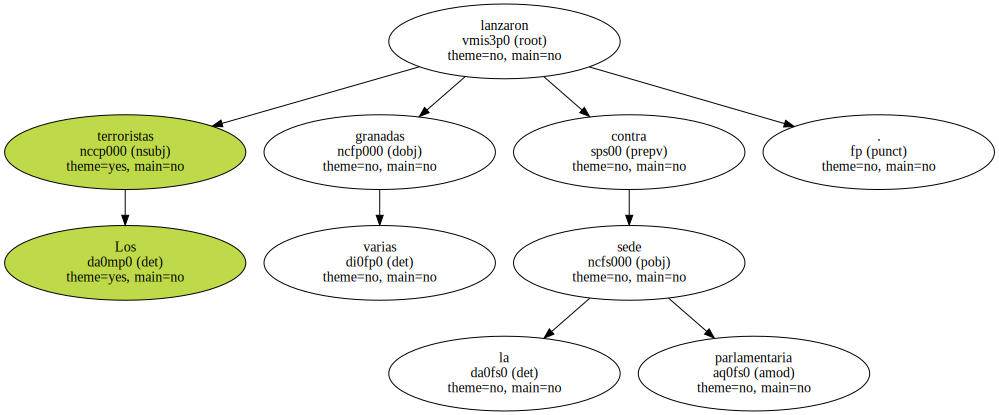Situados a unos 30 metros de la entrada de la cámara , los atacantes arrojaron el primer explosivo contra una furgoneta policial , pero la granada no estalló.

El fallecido , así como varios heridos , era policía.
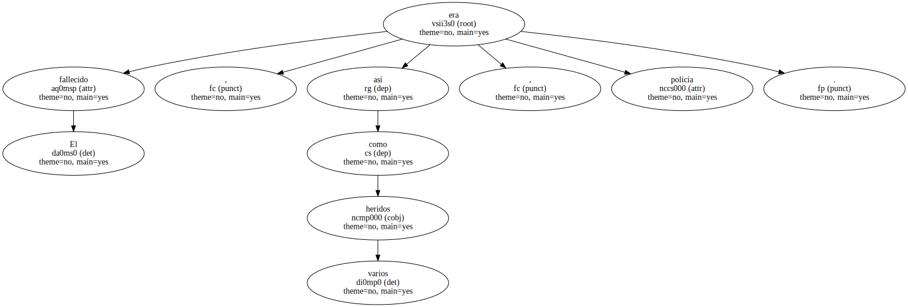Nueva Delhi anunció ayer que ha completado sus movimientos de tropas en la frontera con Pakistán.
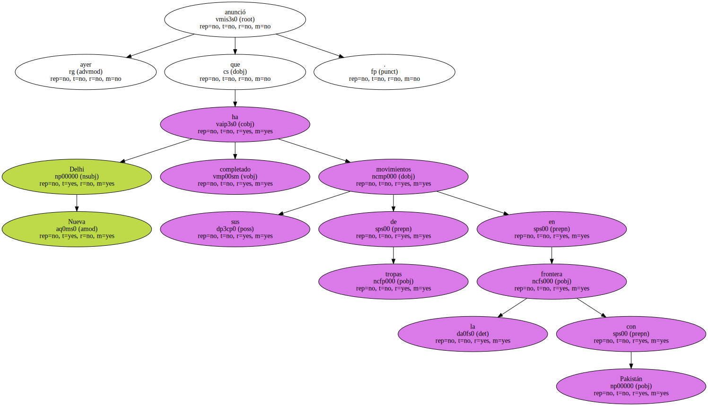El ministro de Defensa , George Fernandes , explicó que , pese a que la tensión se mantiene , se están haciendo " esfuerzos a otra escala " para que las disputas entre los dos países sean resueltas en el terreno diplomático.
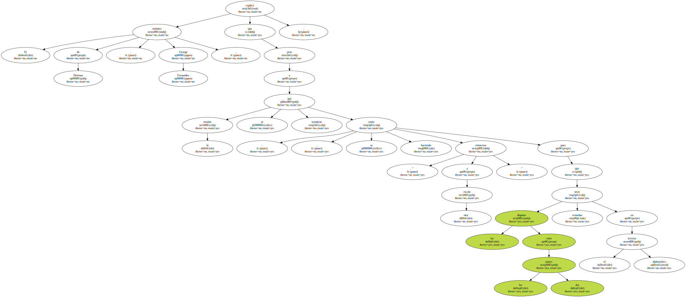De momento , los Ejércitos de ambos estados siguen en estado de alerta.
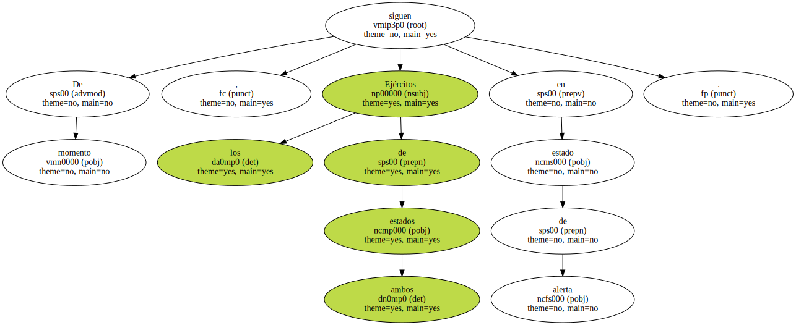Con la intención de avanzar en esa senda , el primer ministro británico , Tony Blair , empezará mañana una gira por Pakistán y la India.
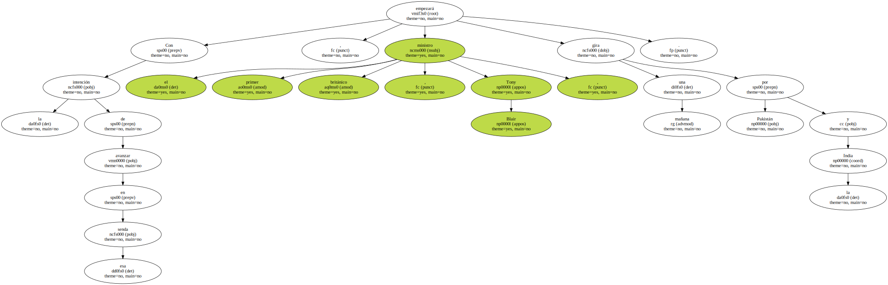Por lo pronto , el presidente paquistaní , Pervez Musharraf , advirtió ayer a las autoridades indias de que " lo pagarán caro " si cometen el " error " de atacar a Pakistán , aunque también afirmó que su país no será el primero en empezar una guerra.
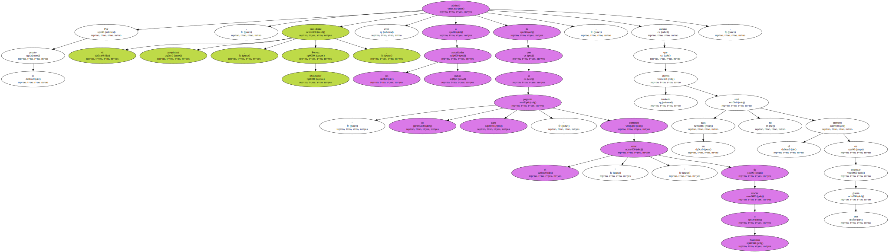